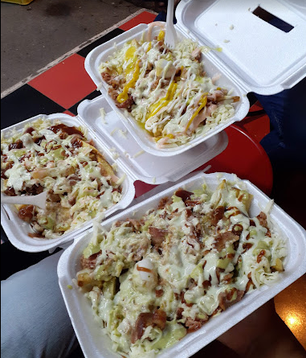

Tociqueso Recipie

Description
This is Envigado's fast food at its best.
It is full of calories and bad colesterol
but also an awesome taste. The salty,
the greasy, and the toasty of it's flavours
Ingridients
- Bacon (tocino,)
- Cheese (Queso)
- Potato (papa)
- Codorniz egg
- sauces
- Cut the potatoes as in french fries
- cut the bacon in cubes
- fry the potatoes
- fry the bacon on a different pan
- cut the cheese on a rayador
- mix everything together
- add sauces at wish